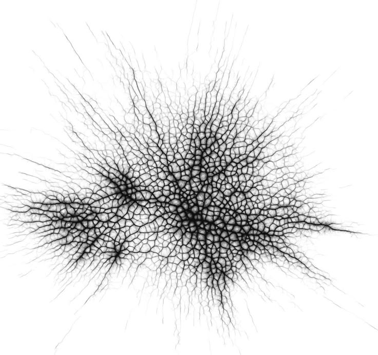

OffKey
2024
Identité visuelle générative d’un festival fictif de musique techno basée sur des visuels génératifs programmés en p5.js
Esthétique glauque, organique et rythmique incarnée par le mille-pattes
Déclinaison sur multiples supports (affiches, réseaux sociaux, badges, produits dérivés...)
Outils mobilisés : VS Code - p5.js, Figma, Indesign, Illustrator
Projet réalisé lors d’un semestre erasmus à Politecnico di Milano
avec Luca SCHARRENBACH
